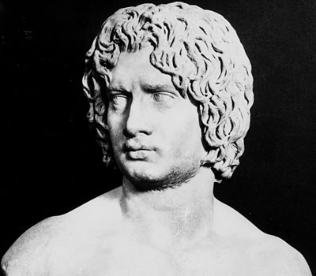

| |
Arminius
Arminius,born in 18 BC was son of the Cheruscan chief Segimerus ,He was also known as Armin or German Hermann and was one of the important german tribal leader who won against Romans by destroying three legions in the Battle of Teutoburg Forest.Arminius had lived in Rome as a hostage in his youth,where he had recieved military education,and obtained Roman citizenship before returning to Germania.He married a princess named Thusnelda who was captured by Romans when she was pregnant.Arminius is highly regarded for his military leadership skills and a defender of the liberty of his people.

Arminius
For
more information please visit :
More Information about Arminius from Wikipedia
| |
|
|